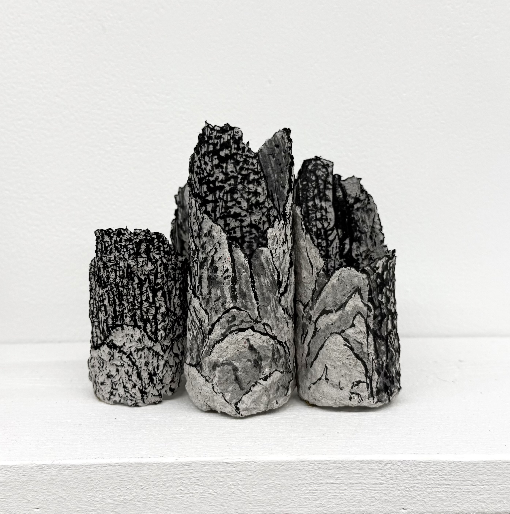
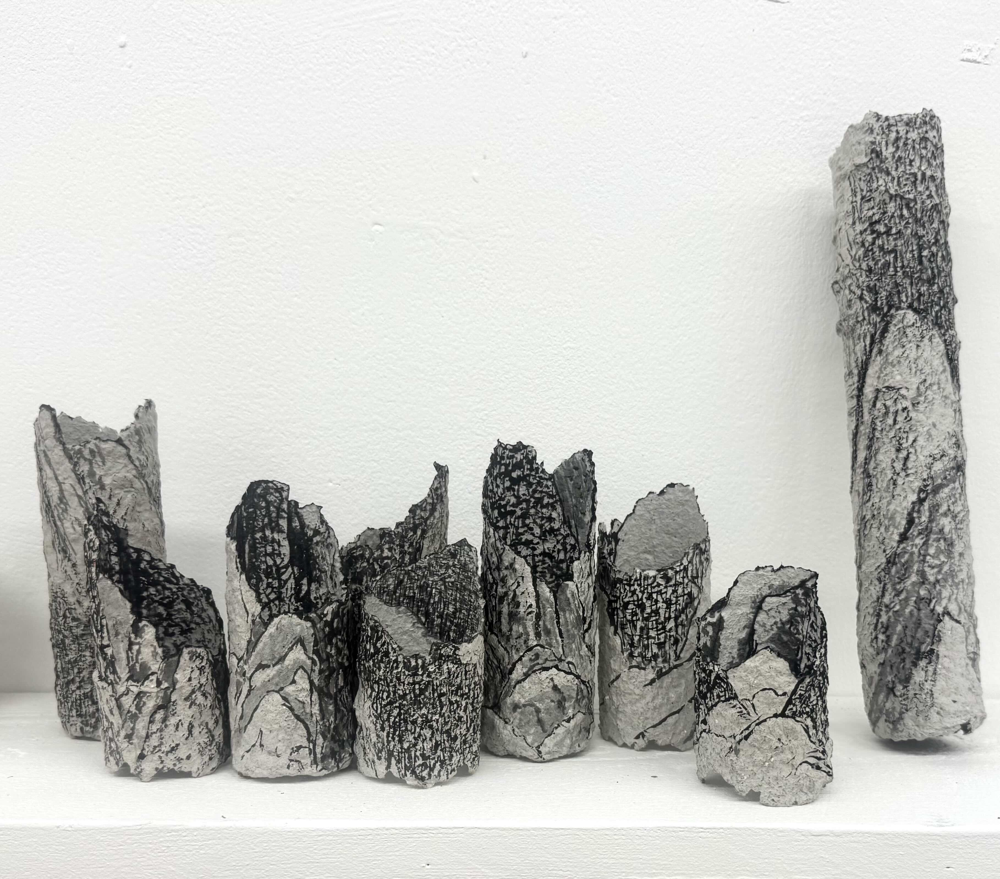
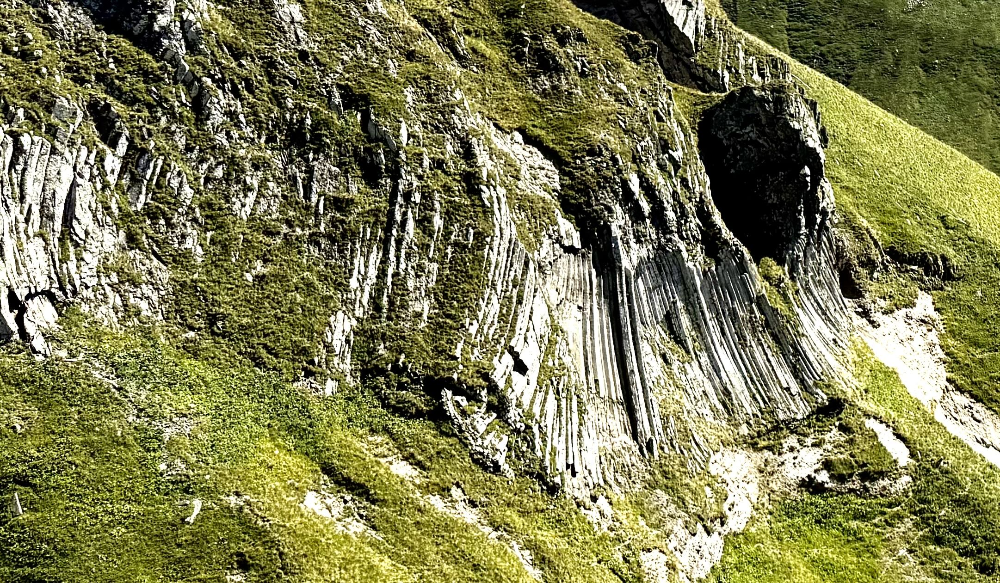
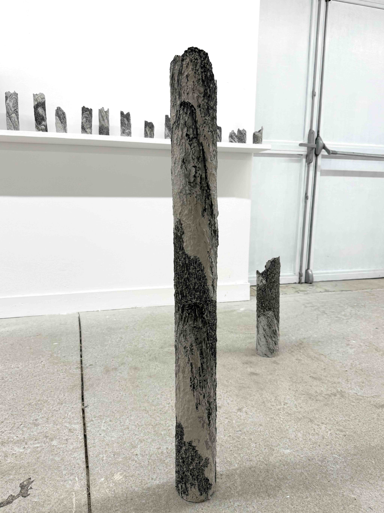
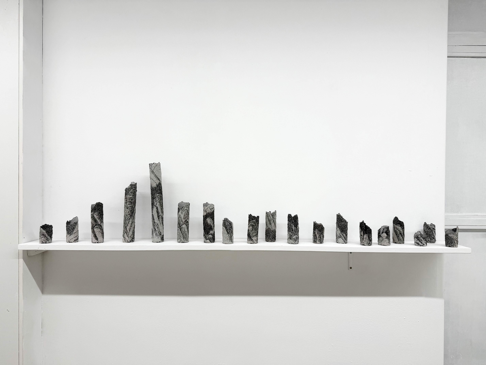
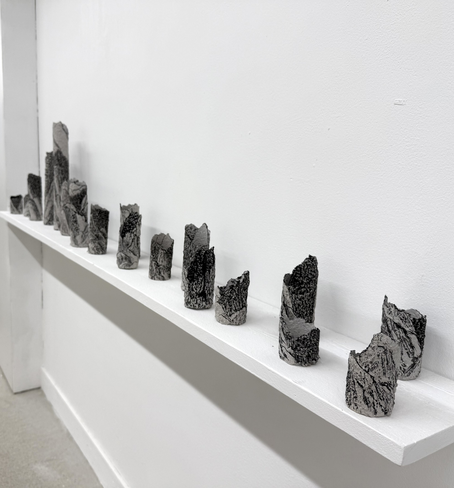
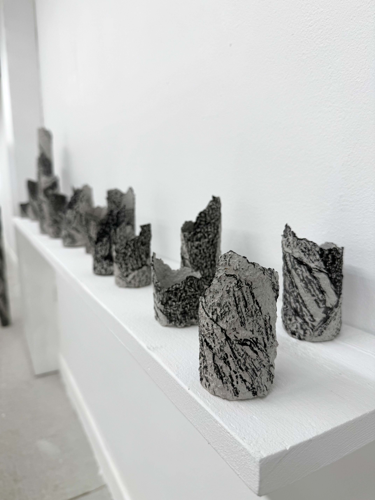
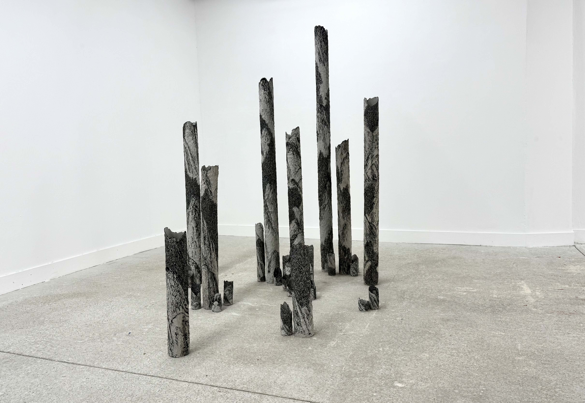
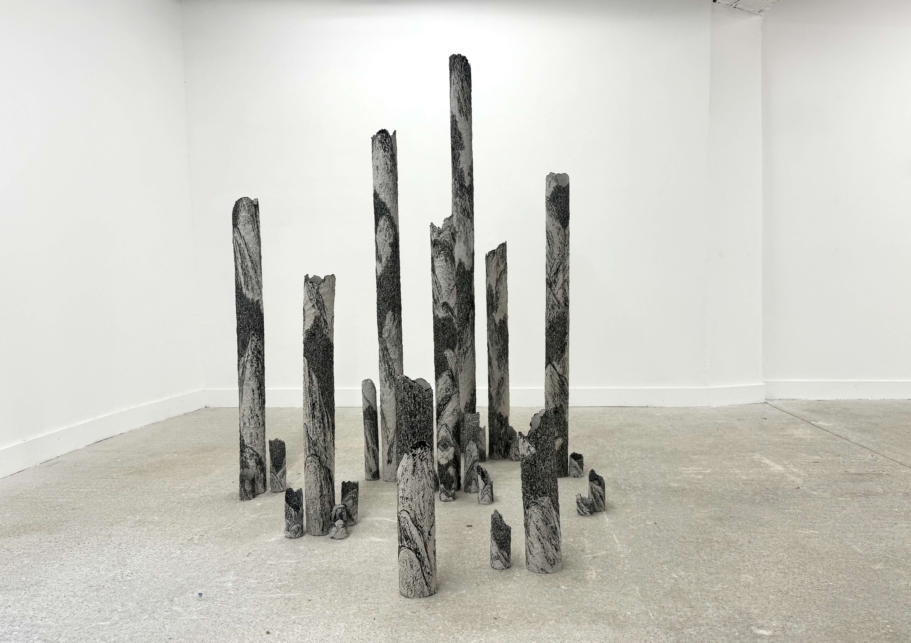
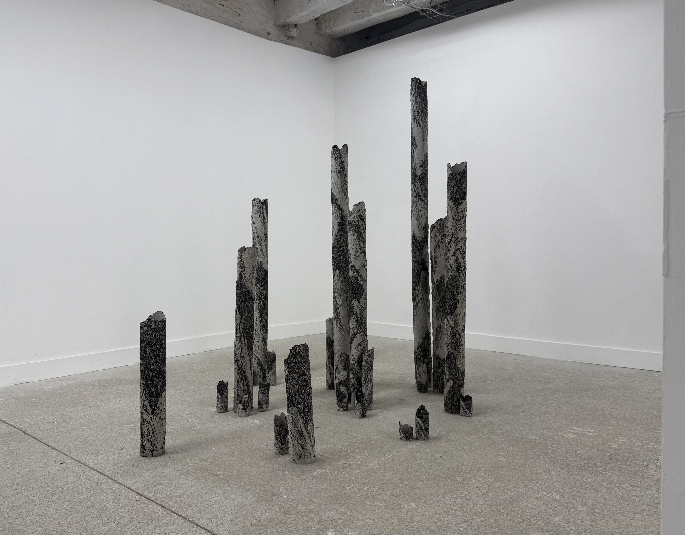

ORGUE
Cette série des tubes est inspirée des orgues volcaniques du Mont Dore. Cela m’a rappelé l’orgue de cathédrale. J’ai réalisé des dessins à l’encre sur ces structures pour évoquer une impression de paysage de montagne et forêt.











×